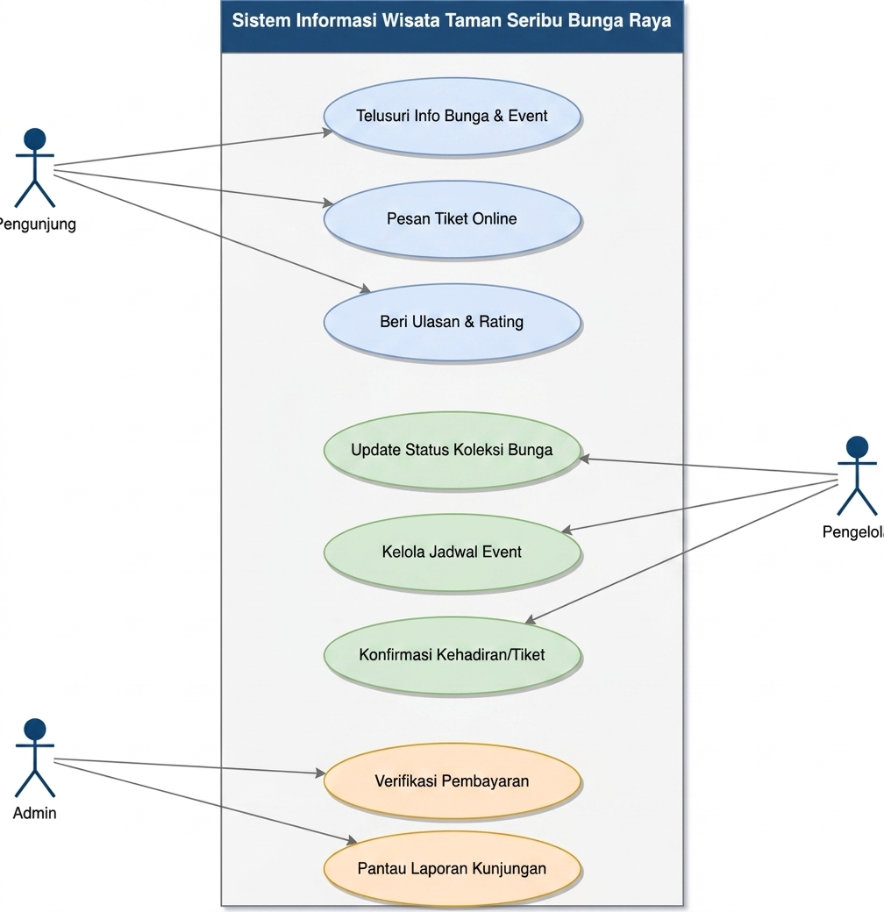
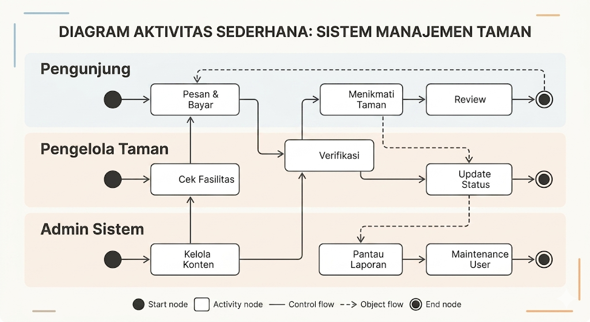
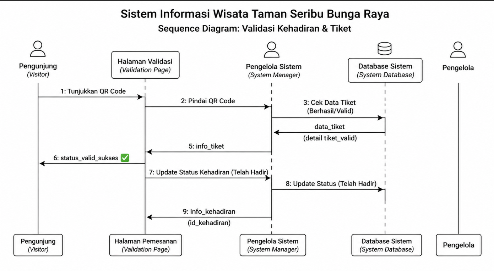
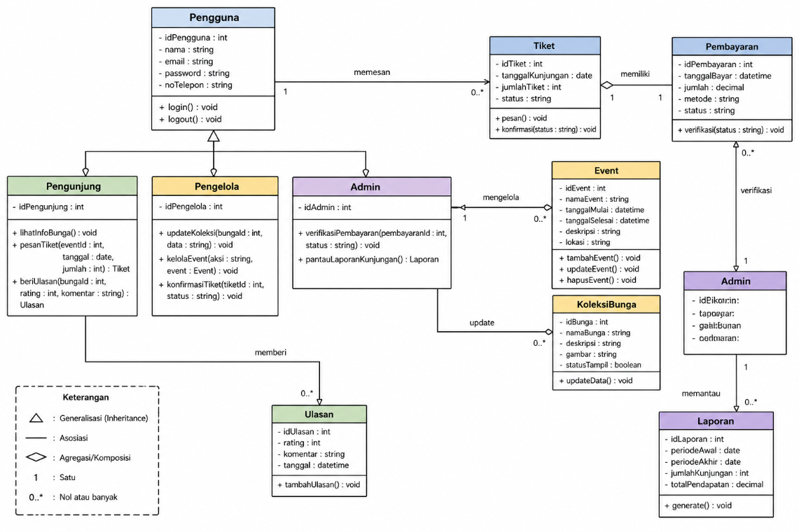

Dokumentasi Perancangan Sistem Informasi Wisata
Website ini memperkenalkan keindahan Taman Seribu Bunga Raya Kabanjahe sebagai destinasi wisata alam dan budaya.
Fitur utama mencakup informasi bunga, fasilitas taman, event budaya, hingga layanan reservasi tiket online.
Aksi utama yang dapat dilakukan dalam sistem:
peta visual bagaimana pengguna berinteraksi dengan fitur website.


Memulai dengan memesan & membayar tiket secara online, melakukan check-in di lokasi, dan memberikan ulasan setelah kunjungan.
Bertanggung jawab memverifikasi tiket pengunjung di gerbang dan memantau serta memperbarui status fasilitas taman secara rutin.
Mengelola konten (harga/info), memantau laporan pendapatan, serta mengelola akun atau maintenance data pengguna.
Urutan interaksi antar objek sistem.

Struktur data dan tabel utama.

Penyimpanan data bunga dan transaksi.
Refleksi dari Taman Seribu Bunga Raya adalah tentang rehat sejenak. Tempat ini mengajarkan bahwa untuk mekar dengan indah, kita butuh lingkungan yang mendukung dan waktu yang tepat. Pulang dari sana, seseorang tidak hanya membawa galeri foto yang penuh, tapi juga perasaan yang lebih ringan dan apresiasi yang lebih dalam terhadap alam. "Bunga tidak pernah bersaing dengan bunga di sebelahnya; ia hanya mekar." — Sebuah pesan yang tersirat kuat di sela-sela jalan setapak taman ini..